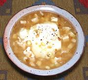

|
Corn Soup with EggsPeru - Cuzco - Sopa de Maiz | ||||
| Serves: Effort: Sched: DoAhead: |
6 soup ** 50 min Most |
This recipe is based closely on one attributed to the cloistered convent of Santa Clara, just outside Cusco, Peru. The recipe is thought to date from the 16th century and is still in use today. | |||
|
3 4 3 1 3-1/2 1-1/2 6 1-1/2 6 |
lrg oz cl t oz T c t |
Ears fresh corn Onion Garlic Chili Aji (1) Queso Fresco (2) Olive Oil Water Salt Eggs (3) |
This soup can credit its longevity to being delicious, simple and easy to make. I have served it as a buffet party dish. It worked well and was well liked. Prep - (20 min)
|